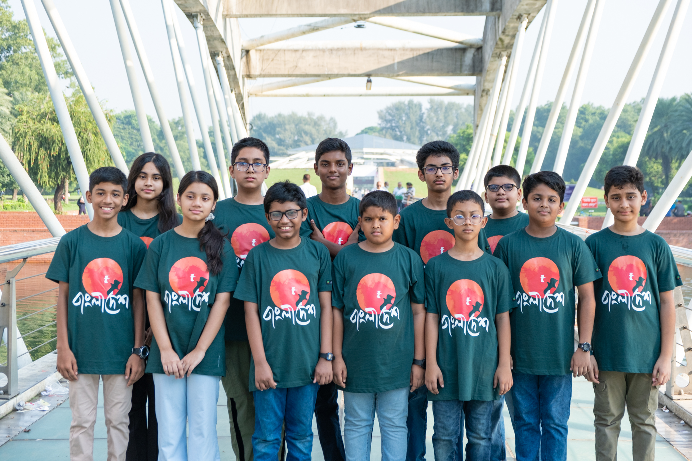
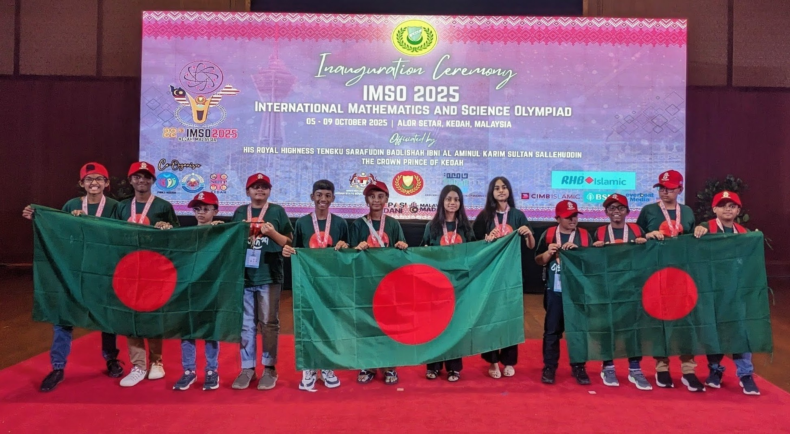
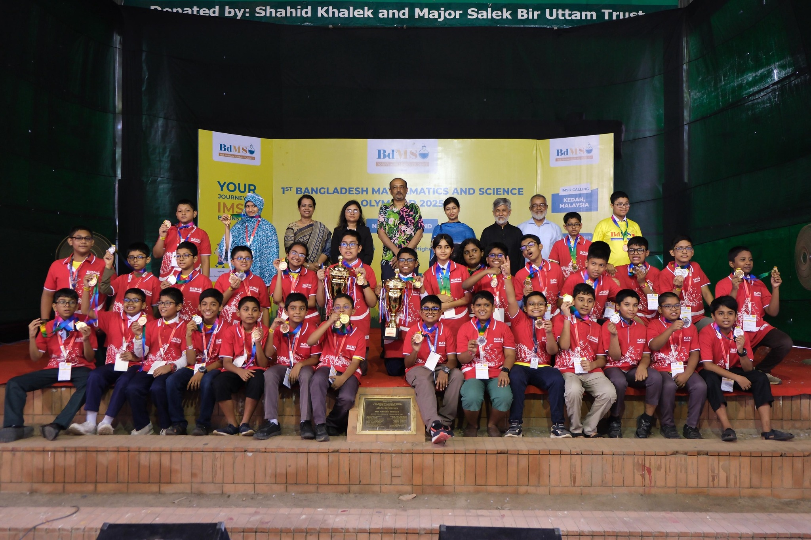
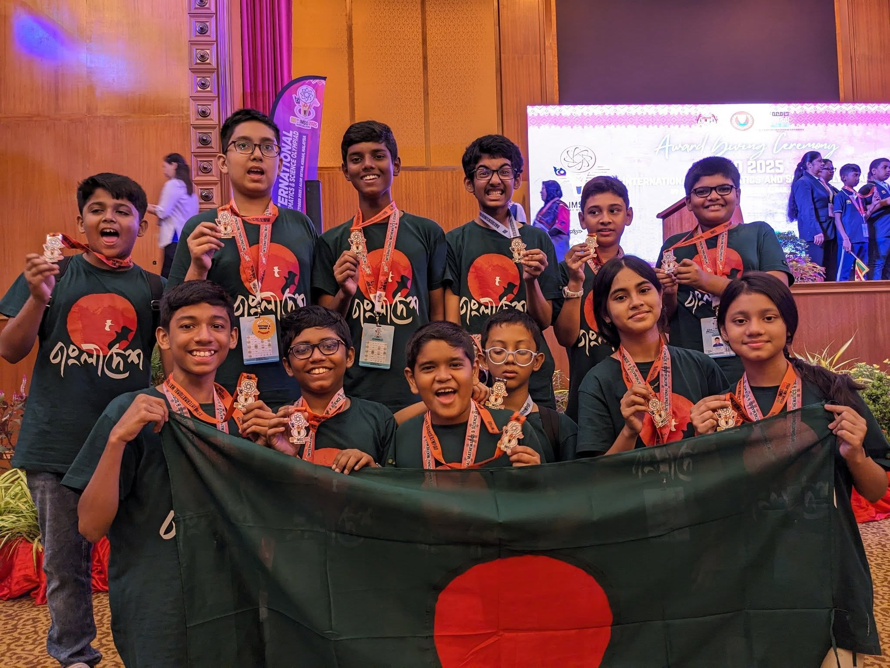
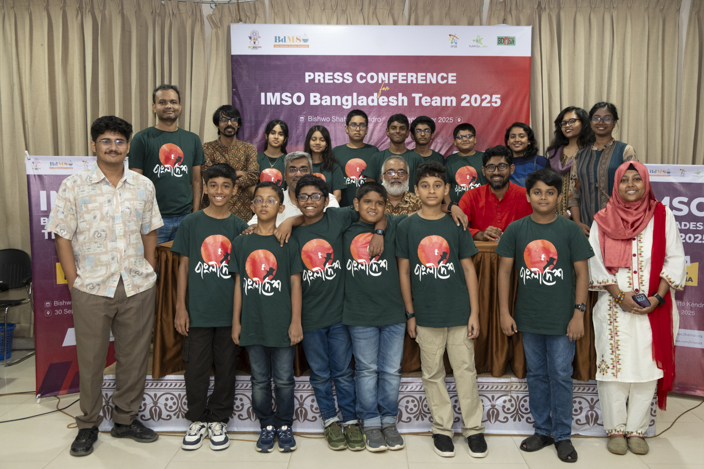

Media & Press
BdMSO in the news.
Online coverage, newspaper clippings, TV segments, and press releases — how the country sees us.
Online Coverage
Articles and features from online publications across Bangladesh.

The Business Standard
Bangladesh wins two silver, ten bronze at IMSO 2025 — every team member medals on debut.
9 OCT 2025Read article
The Business Standard
Bangladesh hosts its first-ever maths and science olympiad for primary students.
6 AUG 2025Read article
Prothom Alo
BdMSO 2025 national round: a talent show for primary students at St. Joseph.
22 AUG 2025Read article
Prothom Alo
12-member Bangladesh team heading to Malaysia to participate in IMSO.
30 SEP 2025Read article
Daily ICT News
Registration opens for Bangladesh's first-ever primary maths and science olympiad.
JUL 2025Read article
Bigganchinta
BdMSO being organized for the first time in Bangladesh — registration now open.
JUL 2025Read article
Computer Bichitra
12 students from Bangladesh participating in IMSO's 22nd edition in Malaysia.
OCT 2025Read article
Digi Bangla
12 primary students' Bangladesh team heading to Malaysia for IMSO on October 4.
4 OCT 2025Read article
Digi Bangla
First national Mathematics and Science Olympiad held with primary school students.
AUG 2025Read articlePhoto Gallery
Moments from the national round, residential camp, and IMSO 2025 Malaysia.

